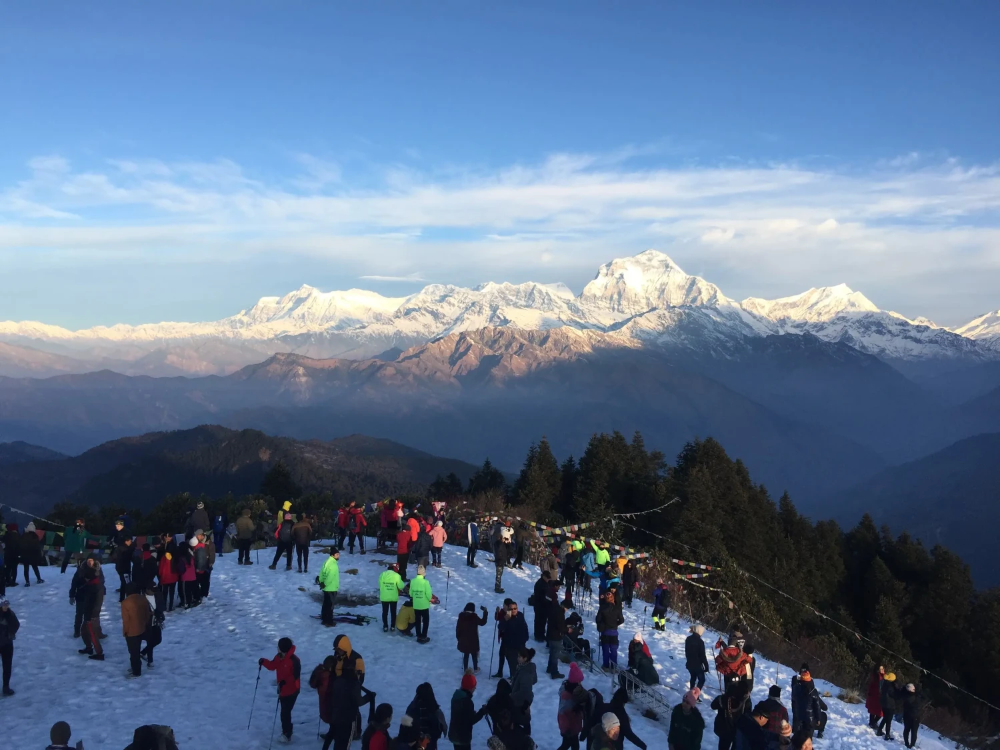
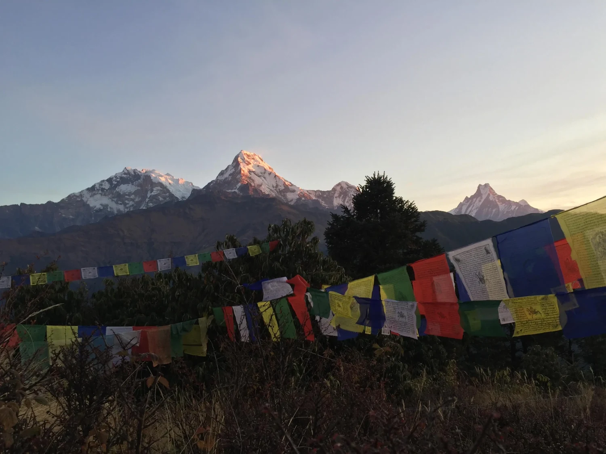

Annapurna Base Camp Trek Altitude: How High Is ABC?
Annapurna Base Camp is situated at altitude of 4,130m, which is around 13, 500 feet above sea level, which makes it as a highest sleeping point on this Annapurna Base Camp Trek itinerary. Also, reaching this altitude is a precious and special moment to for the trekkers, also it brings clear change in the surroundings, walking conditions, and how the body feels.
But, the journey directly doesn’t begin with the high elevation. After reaching to Pokhara at 820m, the trail welcomes you to the gradual climb through the different places like, ulleri, ghorepani, poon hill, thadapani and chomorong. This change in landscape gives the trekkers to experience the different elevations before completely entering the higher altitude parts of the Annapurna sanctuary.
The other important part or point before entering the Annapurna base camp is Macchapuchhre Base Camp, which is situated at the altitude of 3,700meters. From this point, the trial moves forward to Annapurna Base Camp through a more open alpine landscape. As we go up we see trees has already become fewer, the air give more sense of cold, and the each steps are more heavier or can require more effort that it did in the lower altitude valleys.
At higher than 4,000 meters, the air is thin, which means the air has got less oxygen than the lower elevations. Due to this, the normal activities like, walking uphill, climbing the steps, or carrying a backpack can really feel heavy and harder. Some of the trekkers also may notice the faster breathing, sore or tired legs, or a need to walk more slowly. This is the main reason that steady pace is important as the trial moves higher and higher.
The Annapurna base camp trek altitude also changes sharply as compared to the lower sections of the route. To clarify more, pokhara is only 822m, while the Annapurna base camp is 4,130m. Even the ghorepani is at about 2,586m, is considerably lower than the Annapurna base camp or even machhapuchhre base camp.
The overnight stay at Annapurna base camp means the trekkers do spend the night at the highest point of the journey. After experiencing the breathtaking views of the mountain around the base camp, the following day’s route begins with a major decent towards the destination Bamboo, bringing the trek back to the much lower and warmer environment.
Proper understanding the Annapurna base camp trek altitude helps trekkers to manage things more mentally for the changing condition or environment and respect the pace that is required during the trek and final push to the Annapurna Base Camp.
Annapurna Base Camp Trek Elevation by Day
The Annapurna base camp trek is not only a travel experience through forests, small villages, and Snowy Mountain landscapes. It is also a sincere and a steady climb from lower hilly trial to the high mountain basin of Annapurna Base Camp. If you know the elevation each stop, that helps to understand how trial changes day to day and where the body needs more time to adjust.
Day | Place | Approx. Elevation |
Day 1 | Kathmandu | 1,400 m |
Day 2 | Pokhara | 822 m |
Day 3 | Ulleri | 2,050 m |
Day 4 | Ghorepani | 2,860 m |
Day 5 | Poon Hill | 3,210 m |
Day 5 | Tadapani | 2,630 m |
Day 6 | Chomrong | 2,170 m |
Day 7 | Hotel Himalaya | 2,920 m |
Day 8 | Machhapuchhre Base Camp (MBC) | 3,700 m |
Day 9 | Annapurna Base Camp (ABC) | 4,130 m |
The lower point in this trek is pokhara around 822m, while the main point Annapurna base camp is 4,130m. Also, the other major point is poon hill, at around 3,210m. This point is considered at important point because many trekkers reach here in the morning for amazing mountain views.
The Annapurna Base Camp Trek altitude started major noticeable change in altitude after Ulleri. The trial rise from the 2,050m ulleri to 2,860m at Ghorepani. The climb then continues to the Poon Hill before dropping towards to the Tadapani and Chomrong. This uphill and downhill journey makes the middle section feel more strenuous and tiring than expected.
Another major elevation difference comes after, Chomrong. From around 2,170m, the trial gradually moves higher through the Modi Kholda towards the hotel himalaya, Macchapuchhre Base Camp, and then the Annapurna Base Camp. The main section ABC and MBC is especially important because the air become thinner and a bit difficult to trek but with a major reward or breathtaking views of mountain.
The Annapurna Base Camp Trek Altitude is therefore not a straight and simple climb. There are several uphill and downhill in the climb. In the process, trekkers may feel comfortable in one elevation and other elevation suddenly becomes harder and hard to climb. Taking a steady pace in the trial, drinking the enough water, eating proper food, and allowing body to adjust properly can make higher section or trial more comfortable.
From Ulleri to Ghorepani: The First Major Altitude Gain

The walk from Ulleri to Ghorepani is major and one of the first section where trekkers feel the major elevation change. After the journey from lower hills, the pathway begins to climb through the green forests, small villages, and the lone stone built staircases. It can be adventurous but yet demanding day.
Ulleri is situated at 1,540m above the sea level, while ghorepani is about 2,856m. This means the trekkers gain roughly 1,300m in altitude in a single day. For many people , this is the major and first climb in the trekking. So the leg may feel more tired even though the distance is not that extremely long.
In this section, the larger part is made up of stone steps. The famous staircase area can feel endless, especially when a trekker is carrying a backpack. Some of the steps are high and uneven, so the trekkers are suggested to watch their footing while keeping up the steady rhythm. The trail passes through the forests of oak and rhodendron which provides the shades, making the walk nice during the suitable weather.
The Annapurna base camp trek altitude starts becoming the major important point from this section because the body is moving quickly from lower hills to the higher uphill. A comfortable pace is more useful and helpful rather than, fast and taking frequent long breaks. But short and regular pauses can be helpful to regain the control of your breathing, and keeping your energy in good level for the rest of your day.
Poon Hill to Tadapani and Chomrong: Understanding the Altitude Changes
The trekking path from poon hill to Tadapani and Chomrong is an important segment of the Annapurna Base Camp Trekking because the elevation is doesn’t move in one way. In this area, trekkers first climb to poon hill, then decend towards the Tadapani, and then continue down to Chomrong. This change in the elevation could be surprising, especially to those who thinks trekking go on a uphill only or it becomes higher everyday.
Poon Hill stands at about 3,210m and is one of the popular viewpoints while trekking Annapurna region. Many trekkers wake before the sunrise and climb towards it to the viewpoint in the early morning. The short climb can me more demanding or climber can feel more demanding because of the higher elevation, but the amazing mountain views make the every climb great and nice.
After a time at Poon Hill, the trail decceds towards Tadapani, which is around the altitude of 2,874m. The route goes through the beautiful and colorful rhodendron and oak forest, with the area of the stone steps and uneven ground area. As you have already reached higher elevation, this trek gives body a perfect chance to move back to lower altitude.
Now, the trial continues to Chomrong, located at 2,165m from Tadapani. This is another significant decent from the major altitude. The Annapurna base camp trek altitude can be real uphill and downhill journey with amazing experiences with beautiful mountains.
The Annapurna Base Camp Trek Altitude can sometimes look more confusing if trekkers considered the highest point only. The actual trekking includes many uphill climb and downhill descents, and these changes also add to the effort made by a person. So, walking at a comfortable pace becomes important,
Chomrong to Hotel Himalaya: Preparing for Higher Altitude
The trek from Chomrong to Hotel Himalaya marks a major altitude change in the Annapurna Basecamp trekking. After a major descent to Chomrong, the trial begins to take uphill steps again towards the higher part of the Modi Khola Valley. The surroundings also start to change as the trail dives deeper in the vallery with mountains, cooler air, dense green forest, and fewer signs of busy village life.
Chomrong sits at around 2,165m, and hotel himalaya is located at approximately 2,890m. The gain in the elevation is not extremely large in the single day, but the steady uphill walking can still make the day harder and journey more tiring. The trial passes via Sinuwa and Bamboo before continuing towards the area around the Dovan and Hotel Himalaya area.

The Annapurna Base Camp Trek altitude becomes more important from the area onwards because of the following days take trekker to above the 3,000m. The body may experience the thin air. In the day, walking slowly and keeping a comfortable breathing rhythm can help to conserve the energy.
Reaching the Hotel Himalaya is also the useful point to get prepared for the next day’s trial. It is very helpful to avoid rushing during the afternoon, as the body needs more time to adjust while sleeping at the higher elevation.
The Annapurna base camp trek altitude continues to rise after the point Hotel Himalaya towards the Macchapuchhre Base Camp and Annapurna Base Camp. The landscape generally becomes more open and the forest become thinner and the tall mountains begin to feel much closer.
Hotel Himalaya to Machhapuchhre Base Camp and ABC
The walk from the Hotel Himalaya towards Macchapuchhre Base Camp and Annapurna Base Camp is one of the most important altitude sections for the entire trek. The trial leaves the warm forest below and the entry of huge mountain environment where the air feel so cold and thin. To many trekkers, this is the real start of the Annapurna journey.
Hotel himalaya is located at areound 2,890m. From the position, the trial continues gradually upward throught the modi khola valley towards the macchapuchre base cmap, at about 3,700m. The gain of elevation is significant, so trekkers should not judge the difficulty only by the walking distance.
The Annapurna base camp trek altitude is important here because the trial is goes up that 3,000m and continue towards 4,000m. At the higher elevation, some trekkers may notice heavy breaths, tired legs, headaches, or a slower walking rhythm. A slow walk and steady pace allows the body to work with the changing environment rather than fighting with them.
From Macchapuchre base camp the trial goes up to the Annapurna base camp at approximately 4,130m. This is the main point we are about to see and enjoy. At this point, anapurna base camo trke altitude brings trekkers a dramatic mountain basin surrounded by some of the highest peaks in the Annapurna region, making the ultimate climb feel deeply reward giving after such a challenging days and changing landscapes with the steady efforts.
Annapurna Base Camp Altitude Sickness and Acclimatization
Altitude sickness can occur any time, when the body has difficulty adjusting the thinner air and thinner oxygen level at higher elevations. It’s not only related to high altitude mountains, some trekkers may feel this from 2,500m. This risk can increase more in macchapuchre base camp and Annapurna base camp.
The common symptoms include headache, dizziness, nausea, unusual tiredness, loss of appetite and difficulty in sleeping. Some trekkers may also feel weaker than normal or notice they are breathing quickly while taking the uphill route. This is not the signs to be ignored, especially when they continue or become more stronger.
The Annapurna Base Camp Trek Altitude changes gradually in several parts of the route so need to be focused but that’s more helpful as it auto acclimatizes the trekking days. But individual need to drink water, maintain proper pace and adjust accordingly.
The Annapurna base camp trek altitude reaches about 4,130m at ABC, where the air is much thinner than the lower villages. If any symptom is severe, continue getting worse, or suggest a serious altitude related issue, further ascent should not be taken lightly. Urgent descent to the lower elevation may be necessary, and the trekking guide will help you to decide further.
The mountain environment can change so fast, so listen to your body, plan properly, do not rush and enjoy the journey instead of focusing on just reaching the destination.